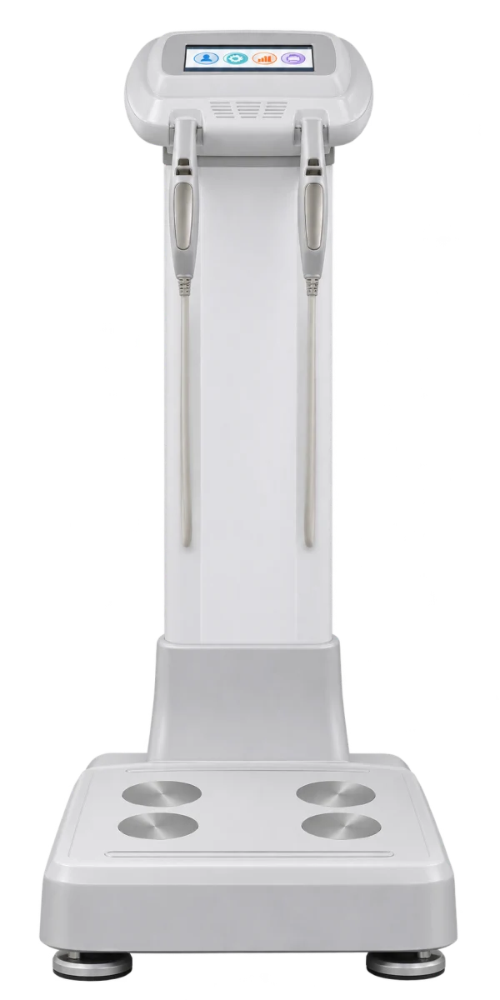

Биоимпедансный анализ состава тела с консультацией врача
«ACCUNIQ BC720»

Короткий ответ гостю
Сначала мы проведём короткий замер состава тела, который даёт оценку количества жира, мышц и воды. Затем вы сможете обсудить результат с врачом. Это удобно, если вы хотите понять, какие показатели важны именно для вас и за чем стоит следить в дальнейшем.
Как проходит визит
Визит начинается с биоимпедансометрии на анализаторе ACCUNIQ BC720. Гость стоит босиком на платформе и держит рукоятки. Само измерение занимает около минуты.
На консультации врач может сопоставить результаты с целью гостя, его самочувствием и медицинской историей. Например, гость может спросить, какие изменения состава тела стоит отслеживать на фоне тренировок, как учитывать принимаемые лекарства и когда имеет смысл повторить замер.
Когда предложить этот вариант
- Гость хочет обсудить, как результаты связаны с его самочувствием или состоянием здоровья.
- Есть предыдущие замеры, и гость хочет понять, что могло повлиять на разницу между результатами.
- Гость планирует изменить питание или нагрузку и хочет сначала обсудить это с врачом.
Подготовка к посещению
Измерение лучше запланировать через 3–4 часа после еды, до тренировки, бани или сауны. Если есть предыдущие отчёты, предложите захватить их на консультацию. При кардиостимуляторе или имплантированном дефибрилляторе замер не проводят. При других имплантах или возможной беременности допустимость уточняют у медицинского сотрудника до записи.
Частые вопросы
Чем этот вариант отличается от обычного замера?
К измерению состава тела добавляется консультация врача. На ней гость может получить пояснения с учётом своего здоровья и задать вопросы о дальнейших шагах.
Что спросить у врача?
Какие показатели важны для вашей цели, что могло повлиять на результат и когда стоит повторить замер. Если вы собираетесь менять питание или физическую нагрузку, скажите об этом врачу на консультации.
Как предложить гостю
Если вы хотите обсудить, что цифры означают для вас и за чем следить дальше, можно выбрать замер с консультацией врача.